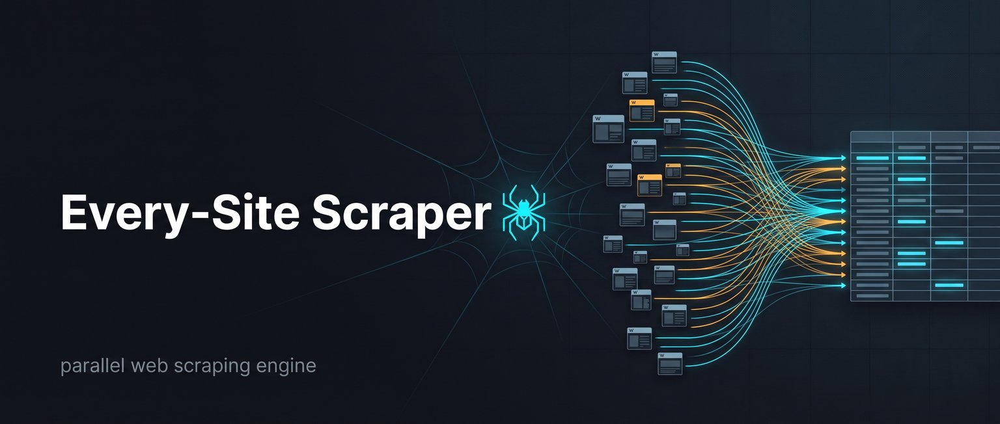

Turn any list of URLs into one 90-column CSV row per site: SEO metadata, Open Graph, Twitter cards, contact emails, phone numbers, social profiles, JSON-LD organization data and detected tech stack. Crash-safe resume, typed JSON output, flat memory at any site count.
View on GitHub Quick startFeed it a TXT list, a CSV with a website column (URL column auto-detected), or pass URLs on the command line. Every site gets exactly one row across a fixed schema:
| Group | Fields |
|---|---|
| Identity & request | final URL, HTTP status, page title, domain, site name |
| Meta & Open Graph | meta description, keywords, OG title/description/image/type/locale |
| Twitter cards | card type, title, description, image, handle |
| SEO | canonical URL, robots meta, viewport, language, charset, favicon, generator |
| Content | H1 text and heading counts, word count, character count, rendering type |
| Links & assets | internal/external/total links, image, document, media, script and stylesheet URLs |
| Social & contact | Facebook, LinkedIn, Instagram, YouTube, GitHub links, contact emails, phone numbers |
| Organization | org name, description, logo, URL, founding date, location, phone, JSON-LD types |
| Tech & weight | HTTPS, detected technologies with evidence, page size, response time |
kill -9 loses nothing already written, and --resume continues where it stopped.--workers, not with site count: 100 sites or 100,000 sites use the same amount.git clone https://github.com/zaktecs-ai/every-site-scraping.git
cd every-site-scraping
pip install -r requirements.txtPython 3.8+ · dependencies: requests, beautifulsoup4, lxml. No API key, no hosted service.
# A few sites (10 workers by default)
python cli.py https://www.python.org https://www.postgresql.org
# 500 sites from a file — 30 workers, CSV + JSON output
python cli.py -f sites.csv -o out.csv -w 30 --json
# Continue an interrupted run exactly where it stopped
python cli.py -f sites.csv -o out.csv -w 30 --json --resumeOutputs per run: out.csv (90 columns, Excel-ready), out.csv.json (typed JSON), out.csv.summary.json (run report) and a structured JSONL log.
python cli.py [URLS...] [options]
-f, --file URLS_FILE Input file: .txt (one URL/line) or .csv (URL column auto-detected)
-o, --output CSV_PATH Output CSV (default: output.csv)
-w, --workers N Parallel workers (default: 10) — all N scrape concurrently
-t, --timeout SECS Per-request timeout (default: 20)
--json [PATH] Also write structured JSON (default: <output>.json)
--resume Continue a previous run — skip URLs already in the CSV
--overwrite Start fresh even if the output CSV exists
--user-agent UA Override the default Chrome User-Agent
--quiet No per-site progress lines
--schema Print the 90-column schema and exitUse a parallel bulk scraper. Every-Site Scraping reads a TXT or CSV list and writes one row per site with 90 columns covering SEO fields (title, meta description, canonical, robots meta, language, favicon), Open Graph and Twitter cards, headings, word count, links, contacts and tech stack — hundreds of sites per minute with 10–40+ workers.
Install the requirements, then run python cli.py -f sites.csv -o out.csv -w 30 --json. The URL column in your input CSV is auto-detected by header name or by content, so CRM and lead-export files work without preprocessing.
Nothing already written is lost. Each completed row is flushed and fsynced immediately, so a crash only loses sites in flight. Re-run with --resume to skip completed URLs and continue with the rest.
Yes — contact_emails and contact_phones are harvested from visible text, mailto/tel links and JSON-LD organization data, alongside social profile links. That makes the output usable for website enrichment and B2B lead data.
No. It is MIT licensed open source and runs locally with requests, BeautifulSoup and lxml. No key, no hosted service, no per-site cost. Respect each site's robots.txt and terms of service.
68 unit tests plus five live validation rounds across 380+ real websites — small businesses, government portals, universities, clinics and global sites. The largest round scraped 213 sites with 30 workers in 84.1 seconds (2.53 sites/s) on a 2-core machine, and survived a mid-run SIGKILL with zero row loss.